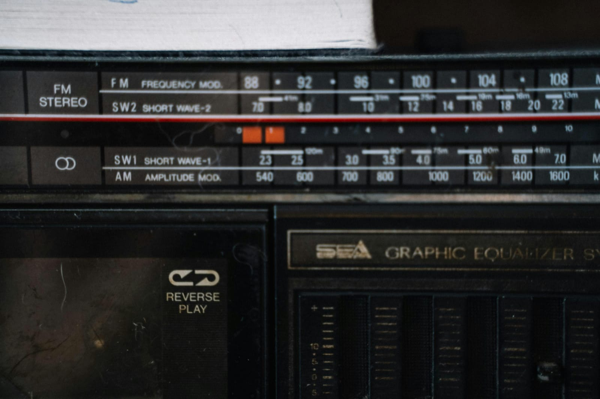

- Definición. PCM es un método de digitalización del audio, donde se muestrea la señal analógica y se convierte en una representación digital, esencial para la compresión.
- Proceso de PCM. El proceso incluye muestreo, cuantificación y codificación, que son pasos fundamentales antes de aplicar algoritmos de compresión.
- Calidad del sonido. La calidad del sonido en PCM depende de la frecuencia de muestreo y la profundidad de bits, que afectan la capacidad de compresión.
- Aplicaciones en audio digital. PCM se utiliza ampliamente en la grabación de audio digital y es la base para muchos formatos de compresión de audio.
- Desafíos de compresión. Aunque PCM proporciona alta calidad, los archivos resultantes pueden ser grandes, lo que hace necesario aplicar compresión para almacenamiento y transmisión.